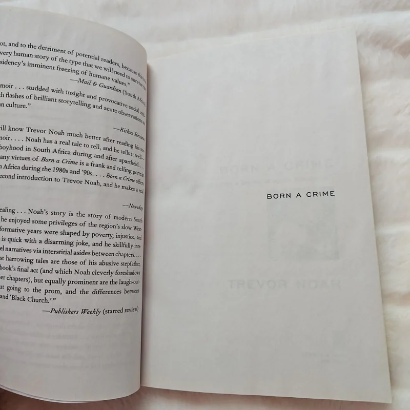
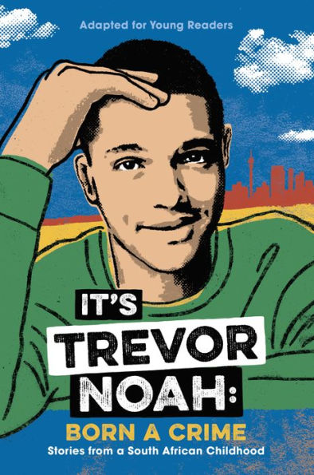
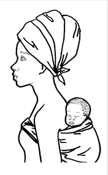

BORN A CRIME
TREVOR NOAH

Trevor uses humor to navigate his daily life. This is clear even from the way he writes the book; he
writes the book in a humorous way that the reader forgets that it’s a sad story.
Trevor doesn't feel that he belongs, and he uses humor to cultivate a sense of belonging and identity in
the society. In school other kids used to hang out with him because he was funny, and this made him feel
that he was part of a group. Trevor uses humor as a bridge to fill the gap between him and other
children who are like him and bring a sense of belonging.
Together with his mother, they use humor to get through life. When they jumped out of the vehicle, they
laughed about the situation, and Trevor said that their “life was a roller coaster and humor was
the
safety bar holding them together.”
He uses humor to cope with trauma. He explains the instance of burning down the house in a humorous way
for him to be able to cope with it and the loss he brought. He even says that he did nothing and still
stands on that.
So humor allows us to deflect criticism, lighten the burden of prejudice, and connect with others,
especially in situations where we might otherwise feel isolated or vulnerable.
Not being black or white made his life harder
The reason he was born a crime is because his mother was a woman who never wanted to go by the rules, so
during“ that time, she decided to get pregnant with a white guy so that she could survive in that area,
so it was a crime because she was supposed to only do that with a man from her tribe, but she decided to
do otherwise. This led to him being questioned because his mother is Black and he is colored, so this
raised a lot of questions and suspicions everywhere he went with his mother, and people thought his
mother was his maid. Then they would be together on the road, but they would keep their distance to
avoid questions and the suspicious looks.
Trevor’s racial liminality reflects a real-life experience of a community in Blantyre, Chigumula, where
there is a family of coloreds, and the people in the community found it amusing to have light-skinned
people, and they were labeled as “coloreds.” The people would stare at them, pointing at them when they
passed by, asking each other if they were humans or dolls. This happened for some time until more
coloreds came to that community, and the people stopped, but not completely.


Families prioritize the needs and well-being of their family members above anyone else, bending rules to protect them from harm and safety concerns and providing ways of access to education. Generally speaking, by bending rules, families demonstrate their commitment to being that protective shield. In Born a Crime, Patricia sacrificed a lot of things and bent rules to protect Trevor Noah. She lied about his real father and birthplace to shield him from discrimination, encouraged Trevor Noah to reconnect with his father, which was not allowed at that time, lived in a white area to give access to better schooling against apartheid law, enrolled in a secretarial course, and became a secretary, bending the rule that Black people are only allowed to work in manual labor and domestic services. This made Patricia a shield for Trevor. Taking a real-life example, families fleeing war or persecution risk everything to seek safety and opportunity for their children, even sometimes crossing borders illegally and facing dangerous situations to ensure their children’s well-being.
In Born a Crime, Patricia Nombuyiselo Noah, Trevor’s mother, is often considered a powerful protagonist,
shaping his development through her resilience and defiance against societal pressures. Her strength and
courage inspired Trevor to challenge the status quo…
Her unwavering spirit in the face of apartheid’s oppressive laws and expectations from society serves as
a powerful example to Trevor, who learns to question authority and embrace his own beliefs even when
they challenge societal norms.
Trevor can pursue his dreams because of his mother’s dedication to showing him possibilities beyond
their circumstances, fostering his love of language, and taking him on trips, which broadened his limits
and instilled a belief in his potential that encouraged his education.
Trevor becomes rebellious and willing to embrace unconventional paths in his life, mirroring his own
mother’s constant acts of defiance against apartheid’s laws and societal expectations. She also teaches
him to think critically and challenge the status quo, even when it leads to conflict.
Trevor grew up with a loving mother, Patricia. Although their relationship was sometimes unpredictable due to the many whoopings, scoldings and tough lessons he had to endure from his mother, Trevor states that his mother did all of this out of love.Her love towards Noah was fierce and rooted in discipline , teaching Noah how to think, speak for himself, and show him limitless possibilities that life had to offer. Although they did not have much money to live the life they wanted, Patricia tries to give Noah a good life through sacrifice and hardships. Patricia, who depicts a bold character, teaches his son how to challenge the system rather than abiding by rules that are oppressive.
Throughout the book, Trevor struggles to find the true definition of love. He struggles with one relationship to another.Noah receives heartbreak from his “thought dog” Fufi after he realises that she had been having two owners. On Valentine's day, Marylene rejects Noah for Lorenzo even after them having a love moment in front of McDonald’s the days prior. Zaheera flies to the United States before confessing her love to Noah.
In summary Noah’s view of love changes and he starts viewing it as a tool of growth and freedom rather than that of oppression and cultural rigidness.
As a summary, Born a Crime is a Touching ,hilarious memoir of survival, identity, and resilience,representing Trevor Noah's journey through apartheid South Africa, his mother’s intense love, and the power of humor in hardship.
